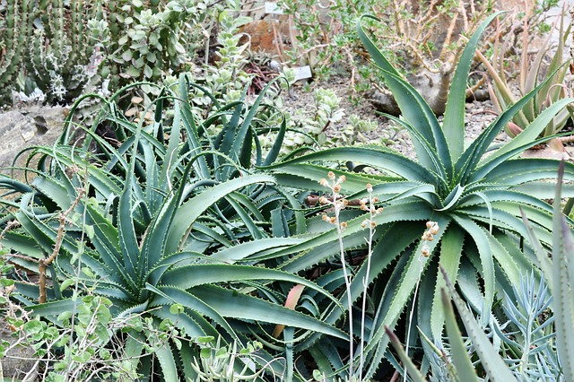

-
Agavaceas

Son muy útiles a nivel ecológico y económico, y es que sirven tanto para conseguir bebidas como el pulque o el mezclas además de utilizarse para la extracción de fibras. De las 300 especies existentes las más populares
son los géneros agave, yucca, hosta o sanseviera